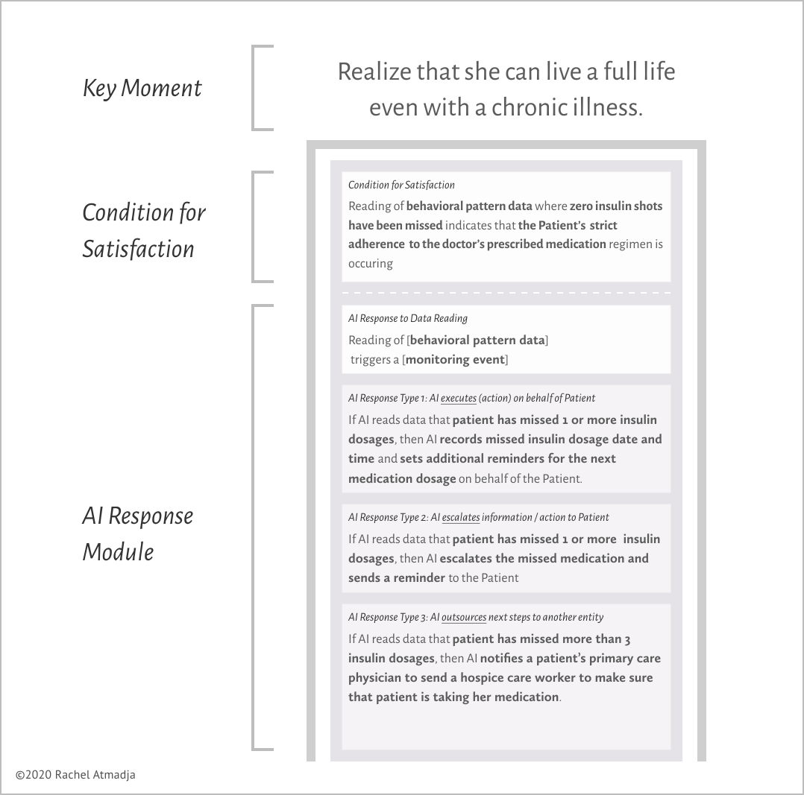
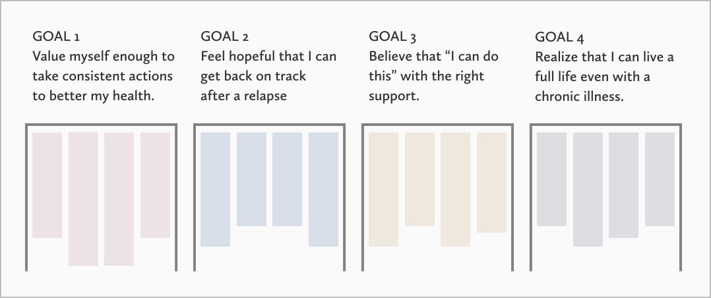
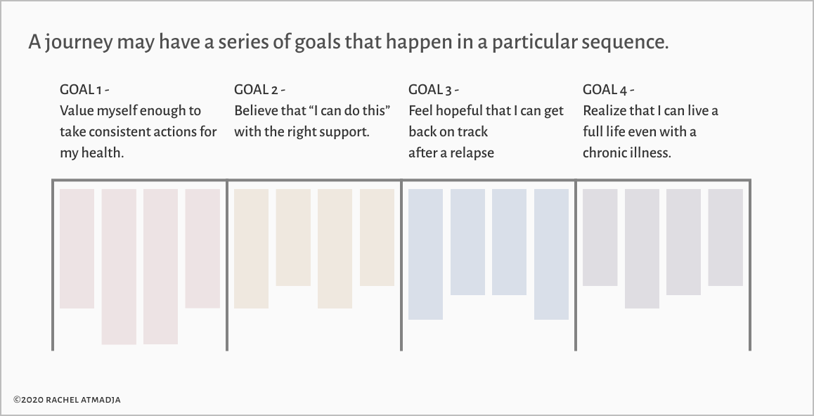
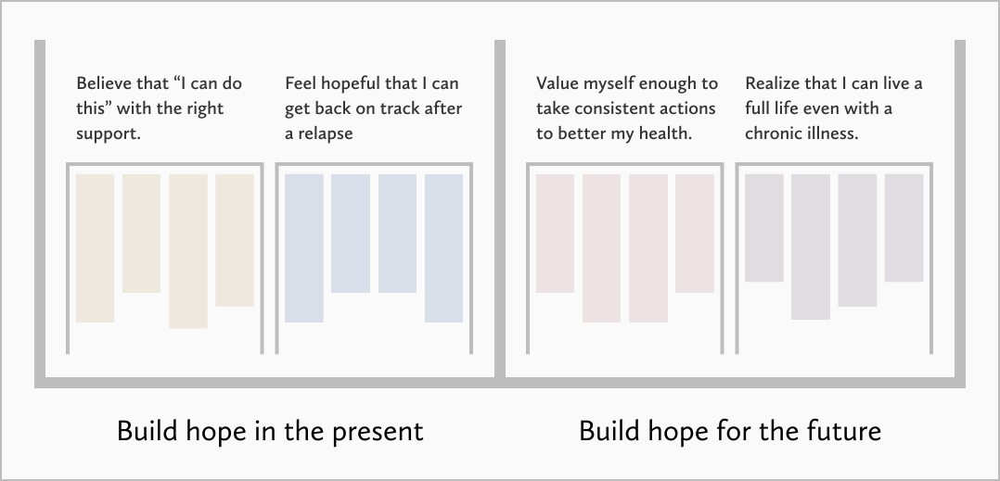
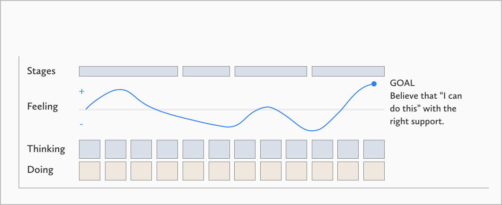
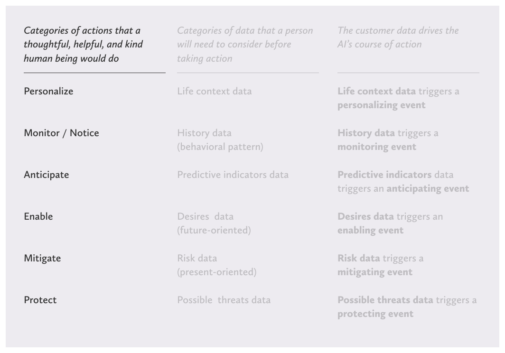
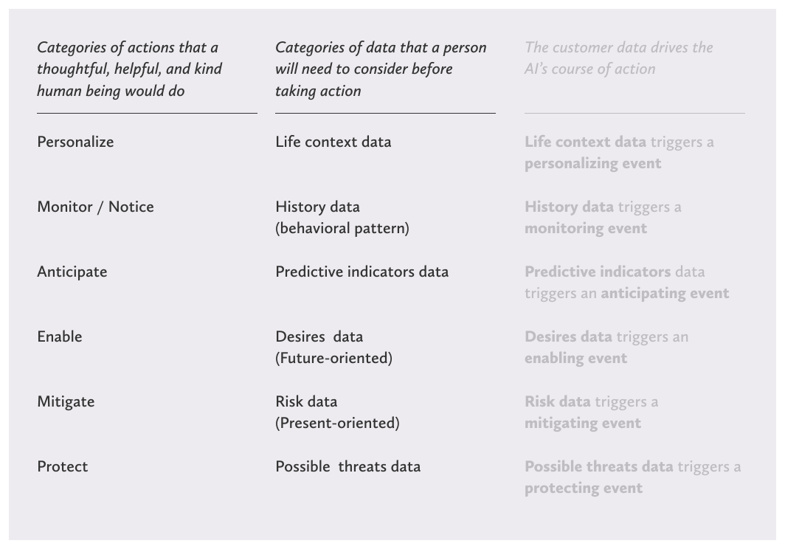
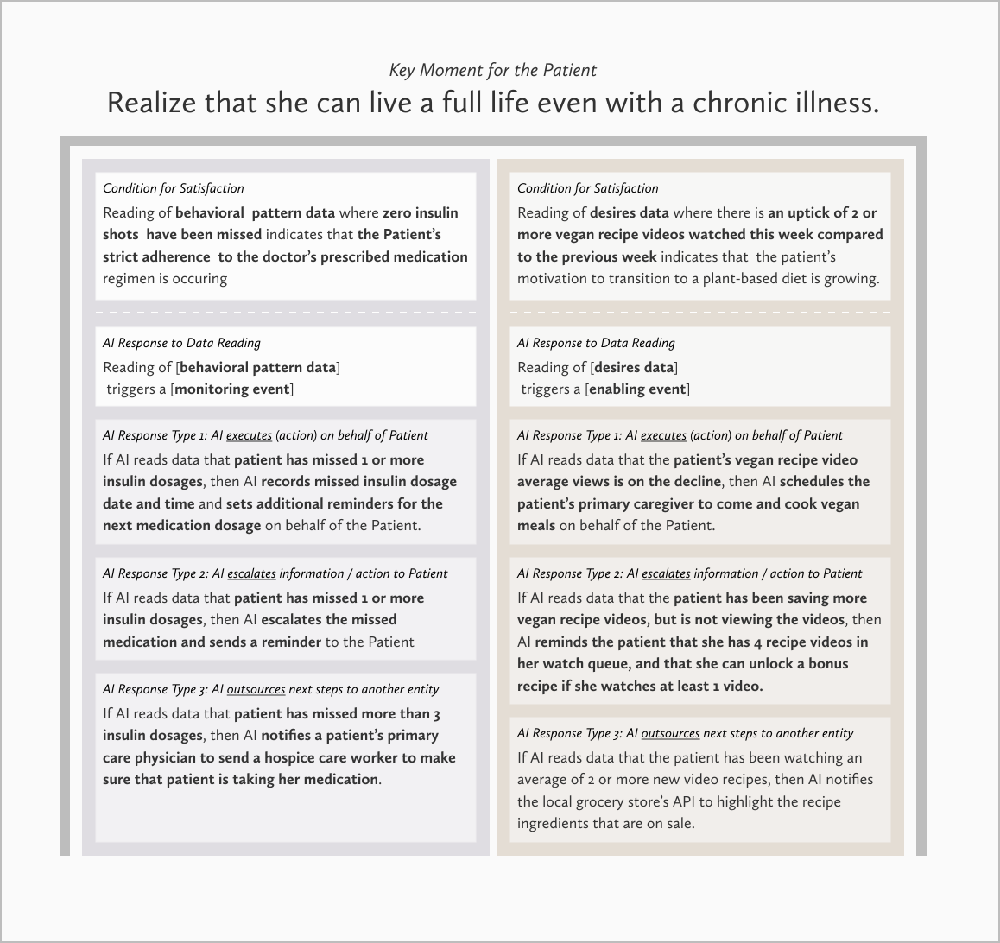

ROLES
- This is a solo project where I created a framework that bridges Experience Design and Data in building AI-powered services.
DETAILS
- I synthesized this framework from principles found in Alan Cooper's Goal-Directed Design, Indi Young's Mental Model Framework, & Adaptive Path's Experience Map framework.
OUTPUT
- Narrative writing and diagrams to illustrate the framework
June 13, 2020
We are entering a new design era.
Have you noticed that the new ways with which we live, work, and play are now event-driven as opposed to process-driven?
Our daily lives are augmented by AI-powered services that respond to our needs. Digital assistants like Alexa learn our purchase habits to remind us to replenish our pantries. Netflix’s machine-learning algorithm curates our watchlist and influences our pop-culture references. While Google’s search engine prioritizes results that we are most likely to view at the top, thereby influencing which sources we come to rely on time and time again.
As an Experience Designer, I cannot help but notice that human-to-machine interactions via the intermediary of clickable interfaces have begun to noticeably decline. We have near-instaneous interactions between human and machine as new AI-powered services operate beyond clickable interfaces. With the rise of AI , the “face” of the machine is starting to disintegrate, leaving us to interact directly with a machine intelligence that behaves less like an automaton—and more like an entity who can practically read our minds through data.
The implication of this new era for Experience Designers is that we are shifting from designing for a process-driven world, to designing for an event-driven world—where our needs drive the AI as much as the AI drives our actions in the physical world.
What is missing in this picture?
Despite all the advances in AI, the only languages available in the marketplace to communicate intent are the languages of mathematical algorithms, statistical analysis, and code. These are actually implementation languages that point towards intent, but not the intent in itself.
There is no language for the Designer to write an intelligent entity into existence from the starting point of empathy.
The Moment Map is a framework that I’ve created to do just this. Its purpose is to empower every Experience Designer to capture human life-goals as ‘Key Moments’ that teams of Data Engineers and Scientists can translate into services or responses powered by mathematical algorithms.
As a framework that acts as a bridge between experience design and data science, the wordings of the Moment Map are by design a combination of the languages from both worlds. The Key Moments are deliberately articulated in the human language of empathy, while the data-reading events are articulated in the machine language of implementation.
Data is in service to human life goals
The Moment Map positions the power of AI in relation to the human life goals it serves. This framework lends itself as a shared language to enable cross-functional teams to design AI-powered services from the starting point of empathy.
Life goals as Key Moments
Life goals are expressed as 'Key Moments' that represent changes in a person’s state of mind or a shift in perspective. For instance, if we’re designing for a Key Moment when a person feels empowered to live a full life even while diagnosed with a chronic illness—how might we know when a person has reached that Key Moment through the reading of data?
Definition
The basic unit is a Moment Tower
AI-powered services consist of a series of Key Moments where the AI entity senses the person’s needs through the reading of data, so that it can respond in a way that is appropriate to the person’s life context. A Moment Tower perfectly captures this 'sense and respond' mode of thinking of the AI entity.
A Moment Tower consists of three primary components. They are the Key Moment, the Condition for Satisfaction, and the AI Response Module. Here they are in relation to each other:
What are the relationships between these components?
A 'Key Moment' captures a single life-goal.
A 'Condition for Satisfaction' is how we define when a person has experienced that moment.
The 'AI Response Module' is a representation of how the AI entity reads the human situation through data, and decide on the most appropriate course of action.
A Key Moment can have one or more 'Conditions for Satisfaction.' A 'Condition for Satisfaction' will have its own 'AI Response Module.' Here are some examples of how that might look like:
A series of Moment Towers make up a Moment Map
The Moment Map enables us to map goals instead of tasks. The outcome of mapping goals instead of tasks is that we can design guided experiences where the person has the freedom to journey through goals in the order of which is most relevant to her life context.
A Moment Map capturing one patient’s Key Moments in her journey to thrive even with a diagnosis for a chronic illness might look like this:

For another patient, the journey might look like this:
Perhaps it is best to design the patient's journey to health to occur in a sequential fashion. In that case, the patient’s journey may look like this:
If you are working with a Mental Model Framework, a Moment Tower can be organized into the Mental Spaces:
Curious as to how I got here?
Let's briefly revisit the situational context that inspired the creation of this framework.
Context
The trouble with task-oriented tools in an event-driven world
As an Experience Designer in the Finance Technology space, I grapple with unpredictability in our customers’ financial journeys on a daily basis. Therefore it was with great irony that I tried to create some measure of predictability by portraying the customer experience as a linear journey. I was trying to capture a non-linear, event-driven customer journey in an artifact that was designed to capture sequential, process-driven tasks—and it was not yielding the complete picture.
Imagine a scenario where the next stage of the customer journey is influenced by the life contexts unique to each customer. And then layer the behavioral variables that influence the customer’s decisions as to where they will proceed on top of that. This scenario exposes the limitation of task-oriented mapping artifacts in capturing event-driven experiences.
A customer journey map may be a great framework for capturing experiences that can be broken down to predictable process steps towards a known goal. But what happens when the goal changes due to unforeseen life circumstances?
This question really points towards the larger question of:
How might we design for unpredictability in the human experience?
When the customer journey was driven by a task-oriented processes, the journey has a finite number of paths. But when the customer journey is driven by the changing needs of the customer, suddenly that journey has a near-infinite possibilities of paths.
I found that it was more effective to design for unpredictability by focusing on Key Moments that matter most to customers, rather than to anticipate every scenario that may be possible, but are not probable.
When we thought of the customer journey as a sequence of steps, we were bound by the sequential nature of tasks that led us to anticipate every possible decision point in the customer journey. Mapping Key Moments instead of the tasks frees us from accounting for scenarios that may or may not happen, and to instead focus on the pivotal moments where the customer experiences a shift in mindset or perspective.
Mapping goals instead of tasks
In the process-driven era, the challenge was to design for task completion. In the event-driven era, the challenge is to design AI-powered, guided experiences that anticipate customers to change their goals at a ny point in the journey.
Design artifacts from the process-driven era can not capture the multi-path and guided aspects of experiences powered by AI-entities.
To illustrate this point, I will contrast a Customer Journey Map with the Moment Map. Now the outcome of mapping tasks in a customer journey is a scripted experience where there are stages that build towards one goal:
This depiction assumes that there is a prevailing path that patients will journey in, and does not account for when the patient gets side-tracked due to life circumstances.
The Moment Map enables us to map several goals instead of tasks that lead towards a goal. The outcome of mapping several life-goals at once, is that we give the customer the freedom to change their goals in mid-stream in response to their life context.
For a patient named Anna, her journey may begin with the hope to be able to live fully despite her chronic illness:
For a patient named Ari, his journey may begin with valuing himself enough to take consistent actions to better his health:
Because the Moment Map is a framework that can handle changes in the customer's goal at any point in the customer journey, it is particularly suited as a framework for designing smart, AI-powered services.
Principles
Before we get to the components of a Moment Map, here are some guiding principles in designing event-driven, guided experiences with the Moment Map framework.
Key Moments are life-goals, not end-task goals
A goal at its highest level is intangible in nature and they are often expressed as thoughts (realizations) and feelings. The best way to articulate a Key Moment is to describe the thoughts and feeling that the customer has when that moment is achieved. Here are a few examples of how to frame a moment:
The Moment when I...
Realize that the cost of inaction is higher than the cost of taking action.
Realize that I have the power to change my situation.
Feel empowered to make a life-changing decision.
Feel hopeful in getting back on track after a relapse.
Believe that I can successfully make a change.
A machine can not understand these intangible sentiments. It just understands what a person is feeling or thinking through that person's behavioral data. This means that when we design the AI entity's responses, we will need to train the AI entity on how to infer human thoughts and mental states through the reading of data.
We are designing an entity
The subtle-yet-critical nuance in designing smart, AI-powered services is that we are designing an entity that is capable of making judgment calls based on the reading of data. It is also capable of taking service actions on behalf of a human should we authorize it to.
In order to determine what customer data is needed by the AI to take action, we must first understand the categories of actions that the AI will undertake once it processes the customer data. Unsurprisingly, these categories of actions mirror what a thoughtful, helpful, and kind human being would do on behalf of another.
The next step is to articulate the categories of data that the AI will need to "read" in order to decide the next best course of action it will take. There are as many categories as there are action categories one can think of. I find that the list of categories below is great starting point that covers most situations.
The data category will then drive the action category taken by the AI entity:

Synthesis
A Moment Tower consists of three primary building blocks.
3 components of a moment tower
The Key Moment where a human achieves a desired outcome.
The condition for satisfaction that quantifies for the AI the data that indicates that the moment has been achieved.
The AI responses to various data readings
To illustrate the relationship between these components, we will be designing a Moment Tower within an AI-powered, guided experience for a patient who has been diagnosed with a chronic illness.
Component 1: the Key Moment
The best way to articulate a Key Moment is to describe the feelings or thoughts that a customer has when that moment is achieved. For the patient who has been diagnosed with a chronic illness such as diabetes, a Key Moment in this patient's journey might be:
Component 2: the Condition for Satisfaction
A machine can not comprehend the intangile thoughts and feelings of a person. However, it can infer where the human is emotionally and mentally through the person's data. It falls to us to quantify for the machine what data points to read in order to understand where the human is in their journey. I find it effective to format the condition for success like this:
Condition for satisfaction
Reading of [data category that signals success]
indicates that [desired outcome] is occurring.
For our Patient whose life goal is to live fully despite a chronic condition, a condition for satisfaction might be:
Component 3: Categories of the AI’s Responses
Each 'Condition for Satisfaction' correlates to an ‘AI response module,’ which consists of a 3 categorical ways that an AI entity responds to data readings. The AI Assistant reads the data it gathers from the customer. Based on where the data reading falls in relation to the condition for success, the AI will respond accordingly.
The actions taken by the AI in response to reading the data fall under 3 categories: execute an action on behalf of a human, escalate the event to the human’s attention, or outsource an action to another entity (be they another human, AI, or system. I find it effective to format the AI’s responses like this:
Format for the AI Response Module
Reading of [data category] triggers an [event category] where:
If [situation conveyed by data], then execute [action] on behalf of human.
If [situation conveyed by data], then escalate [event] to human's attention.
If [situation conveyed by data], then outsource [action or event] to another entity (another human, AI, or system).
In our example of the Patient’s 'Condition for Satisfaction' being her adherence to the doctor’s prescribed medication regiment, the AI responses to the reading of her medication data might be:
A Moment Tower with multiple Conditions for Satisfaction
A Moment Tower can have 1 or more Conditions for Satisfaction. Each condition for satisfaction correlates to an AI Response Module, where the AI entity "reads" the behavioral data to decide between 3 categories of actions. Here is what a Key Moment Tower with two conditions for success might look like:
The many ways to structure a Moment Map
A Moment Map can be made of a series of Key Moments that can occur in any sequence:
A Moment Map can also depict a journey with sequential stages:
A Key Moment can also be inserted as a tower within a Mental Space
Looking ahead
The Moment Map is the first of several frameworks that I will be working on to empower Designers to build experiences in this new era of data-driven smart services, and I look forward to evolving this framework as it is put into practice.
This framework stands on the shouldes of giants. In creating it, I drew ideas and inspiration from Alan Cooper’s Goal-Directed Design, Indi Young’s Mental Models, and Adaptive Path’s Experience Mapping Methods. I am especially grateful for the encouragement of my mentor Terry Ribb, who inspired me to develop this framework in the first place.